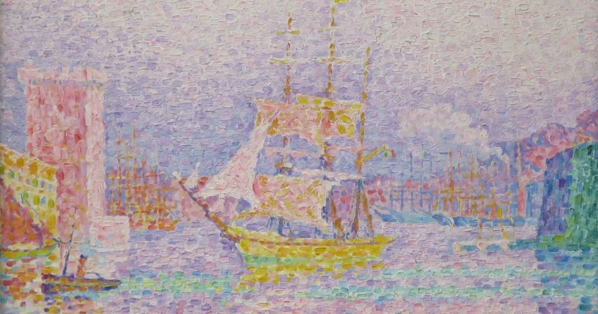
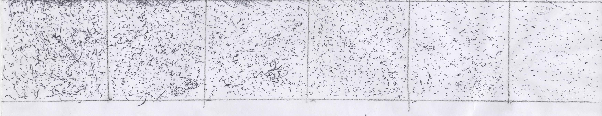

Nesta aula nos vimos sobre o pontilismo, que é a arte de desenhar usando pontos.
O que vimos?
Atividade
Fizemos também uma atividade sobre fazer um degradê com pontos. Usei a caneta fazendo vários pontos mais separados até os mais juntos, onde fui ajustando aos poucos

×